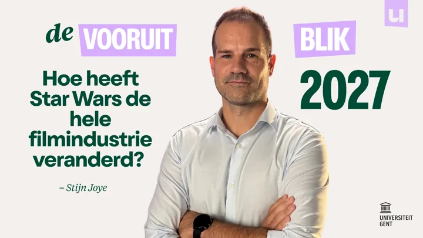
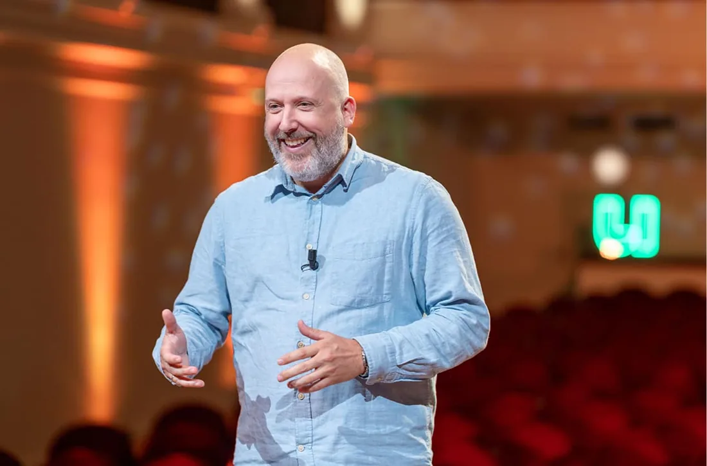

Lezen · 15 november 2026
Het boek
23 essays van wetenschappers van de vijf Vlaamse universiteiten, elk vanuit één vraag.
€24,50 · Uitgegeven door Pelckmans.
Een kennisproject van Universiteit van Vlaanderen, Radio 1 en Pelckmans: wetenschappers geven context bij 23 vragen over 2027.
23 essays van wetenschappers van de vijf Vlaamse universiteiten, elk vanuit één vraag.
€24,50 · Uitgegeven door Pelckmans.

Twee wetenschappers, één vraag. Ongeveer drie afleveringen per week op VRT MAX, YouTube, Spotify en andere podcastkanalen.
Bekijk het publicatieschema →Jacotte Brokken in gesprek met de wetenschappers. Elke weekdag van 12 tot 13 uur, 21 december 2026 tot en met 1 januari 2027.
Luister via Radio 1 ↗
15 november 2026 · Boektopia, Antwerp Expo.
Gesprek van 12 tot 12.45 uur, signeersessie van 13 tot 14 uur.
23 november 2026 · VRT.
Lanceeravond voor genodigden, vanaf 18.30 uur.
Voorjaar 2027 · Vijf universiteitssteden.
Panelgesprekken met Kobe Ilsen. Data en locaties volgen.